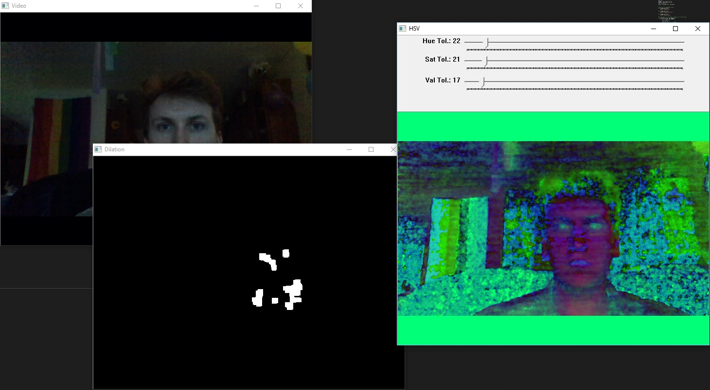
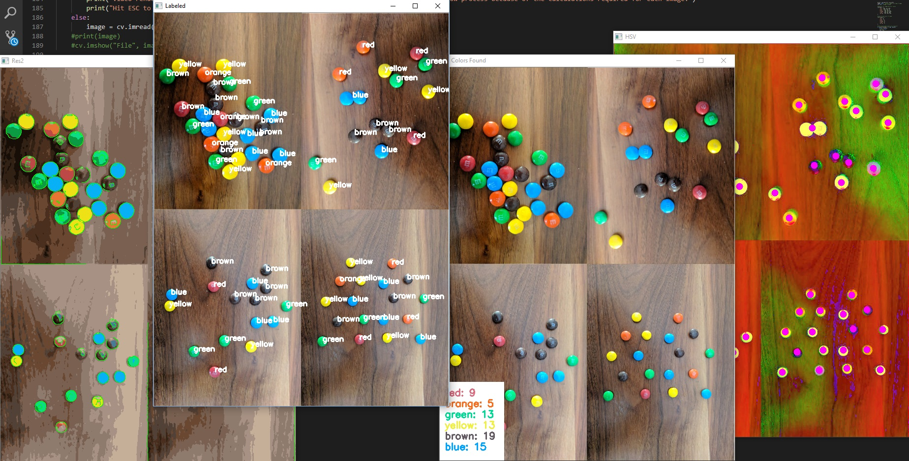
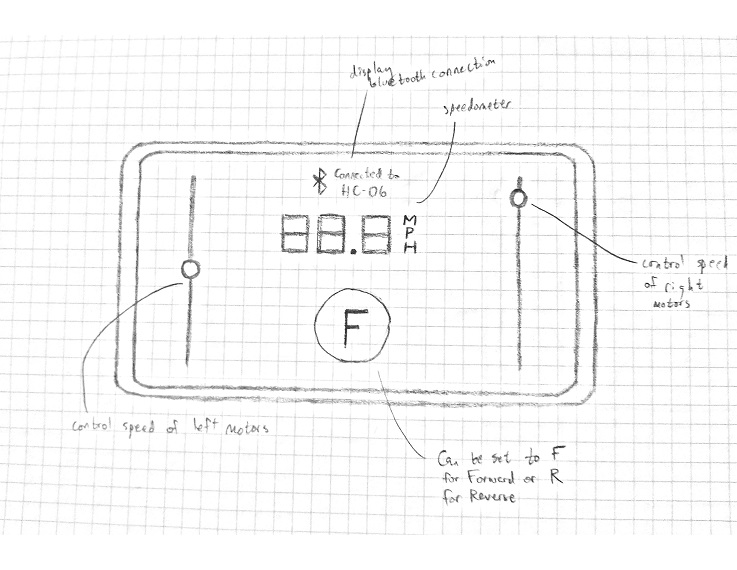
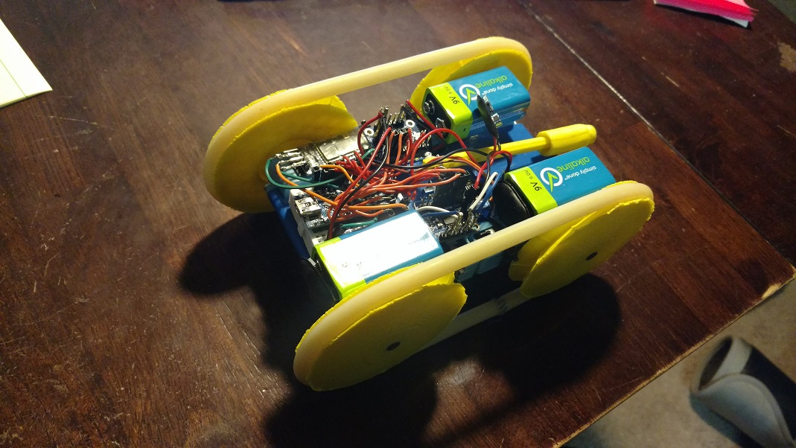
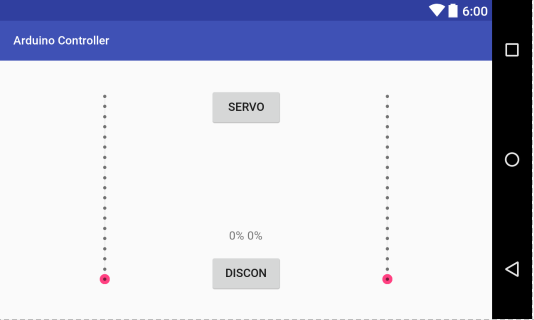

RPG MegaMart
Software Developer
RPG MegaMart is a live mobile application for table-top roleplay game settings that lets players create and sell magic items for their games.
How It Works
As a public website, anyone can create items for stores in their fantasy game, whether that's Dungeons & Dragons, Monster of the Week, or Uncharted Worlds. Items can be fully customized, and once they're made public, anyone can see them.
Once you're ready to offer your players items, you can add any items you've created (and any others that are public) into a new store, then add your friends so they can shop.
This is the second iteration of this store--the first one was prototyped simply running from a laptop on my local network and built in PHP. For the second version, I opted for a more refined tech stack using .NET Core and an MVC design pattern with a PostgreSQL database.
The Juice Press
Software Developer
The Juice Press is a satire website with many writers contributing content.
How It Works
The Juice Press offers a place for content writes to create and edit satirical articles and quizzes--yes, it has a custom quiz builder.
Cluest - Mobile Game
Lead Software Engineer/Project Manager/Game Designer
Cluest is a mobile gaming application built using React Native for simultaneous release to Android and iOS devices.
How It Works
As a mobile treasure hunting game, Cluest utilizes the device's built-in location service in order to send users on treasure hunts. When a user joins, Cluest automatically finds friends using Facebook's API. From there, a player can walk around anywhere and save their current location. This becomes a clue with some type of hint to help anyone find the location. Once a user has enough clues, they can string them together into a sequence called a treasure hunt and send it to their friends! Once a person has received a hunt from another user, they can enter treasure hunt mode to play the the hunt, where each clue found will point them towards the next one for a complete treasure hunt.
Building It
Initially, it was difficult for me to decide on which technologies and services to use in order to create this game. I considered Android Studio, Amazon Web Services, and Apache Server for various aspects of the program. Eventually, I decided on using React Native--even though the technology is fairly new--in order to have a simultaneous release to Android and iOS. Additionally, I went with Google Firebase as the back-end service for its easy of use, scalability, and integration with authentication techniques. Learning and becoming familiar with all of these new technologies over a couple of months was difficult, but well worth it in the end!
More Info
Want to see the source code? It's available here on Github.OpenCV - Robot Vision
Programmer/Team Leader
This series of projects involved an in-depth look into a variety of image processing and manipulation techniques. Primarily using OpenCV, these techniques explored how computers can see the world through a digital camera and apply that informtion to common robotics problems such as decision making.
Image Manipulation

Using a framework image manipulation program, I wrote Java methods to implement a variety of image manipulation algorithms. These methods involve mathematical operations including image rotations, translations, blurs, masks, and edge detection. Additionaly, the methods covered color operations such as color correction, color detection, equalization, grayscaling, and histograms.
OpenCV Programs
OpenCV has some fantastic features! Using Python3, the first application we built was for color detection, using HSV tolerances to find pixel values within a threshold that could be modified at runtime. Then, we used parts of this program to create another one that took the average of the previous few frames. Using matrix operations, we calculated the differences between frames to detect and display motion as it occurred in the frame.
Next, we worked on object detection with images. Using the Canny edge detection algorithm and OpenCV contour functions, we attempted to separate objects by color and shape. As a challenge, we used images and videos of Skittles and M&Ms, attempting to count the number of occurrences of each color. This turned out to be particularly difficult when the candy color was similar to the background or when two of the same color overlapped at all in the image, but served as a great exercise for determining tolerances when applying the same methods to robot vision.
Robotics
Using what we'd practiced with in OpenCV, we next moved on to putting some of these techniques to use in robotics. With some of the robots at MSU's robotics lab, we first started working on a similar problem that faces automated vehicles: following a simple line.
Using a combination of blurring, edge detection, and thresholding, were were pretty quick to get the robot to follow a solid line in one direction. From there, we moved on to a more difficult challenge of a dotted line that occasionally became solid for sections. This was more difficult, but with adding a method for calculating the center of mass of filtered objects in the current frame, we were able to acheive it. When the robot reaches the end of the line, it does a 180° sweep to look for any more signs of a trail before determining that it's finished the path.
Our next task was a bit more difficult as it involved more steps. We designed and implemented a program that where the robot would actively search for a human face. Once it found the face, the robot tried to move to a comfortable distance to speak to the human--moving closer if the human was farther away, moving backwards if too close, etc. Once the distance was comfortable, the robot would greet the human, and then continue to track the face of the person. If the human left the frame for more than 15 seconds, the robot would begin the whole process over again, looking for another human face.
Finally, our last program brought everything together. Using object detection to differentiate obstacles from a safe path, the robot would determine the best route to traverse a distance in order to reach a human. In order to determien when a human had been reached, we had to incorporate many of the features of the previous program for face detection and tracking of a human face. Once a person had been found, the robot would wait to retreive and item from them, then turn around and navigate the same course, avoiding all obstaclces and choosing the optimal route.
More Info
Interested in the source code? These projects can be found here:
Cat's Conundrum
Programmer/Project Leader
Over the course of 4 months, I led a multidisciplinary team which also included two mechanical engineers and one electrical engineer. Our task: to build a working prototype of a remotely controlled vehicle from scratch.
The Problem
The Cat's Conundrum is a challenging obstacle course with around twenty interchangeable tiles, with one obstacle on each tile. With a budget cap of $200, we had the difficult objective of prototyping a vehicle within the specified size limits that could navigate the course and earn as many points as possible in under ten minutes. Each obstacle was worth a base value of points, and some of them had point multipliers depending on the difficultly accomplished.
With the problem laid out before us, we began the process of research and ideation. With a variety of possible solutions for each functional objective, we moved on to the decision-making stage in order to start building the first version of the prototype.
Making it Happen
After research and some test runs, it was clear that the most effective type of design would involve treads rather than wheels. We also decided on using Bluetooth for our means of controlling the vehicle remotely as it would allow for redunancy of controllers if the control application was deployed to multiple mobile devices. The vehicle had four motors that would work in pairs, and the tread design allowed for skid-steering to make sharp turns on the course.
The code for the controller application was written in Java using Android Studio. The final design ended up being fairly simple in order to make it intuitive to steer the vehicle: two verticle sliders with a handful of additional buttons. Each slider would control one side of the vehicle (up for forward, down for back) and would snap back to the middle (setting the speed to 0) when not being touched. This allowed for incredibly easy control of the vehicle, particularly skid-steering.
Of course, the app couldn't do everything by itself. The vehicle was controlled via an Arduino Nano which I programmed using Arduino's C++ library. Essentially, every time a button was pushed or a slider was changed in the app, a character array was sent to the Arduino which received it through a Bluetooth module. Then, the Nano would decypher the command based on what the current settings of the vehicle were and what the character array contained. Simple, yet effective!
Results
After many design attempts, a pretty rough first prototype, and a significantly changed second prototype, we had a vehicle that ran--and did so very well. Even our test runs didn't go as smoothly as the actual competitive run of the Cat's Conundrum course. Some last minute tweaking and battery replacements and we were good to go!
Our course run was a huge success. In 10 minutes, we were able to earn all the points that we needed. Our vehicle was light, nimble, and still had a rugged enough design to handle the rough terrain with ease. The lightweight nature of our vehicle also proved to be instrumental in the performance of the motors, as our batteries didn't come anywhere near drained enough to make a difference in the amount of torque that could be produced.
The simple and intuitive design of the app with two sliders allowed the controller to quickly be learned in the days leading up to the challenge. During the course run, the precision of the controls also proved to be instrumental on certain obstacles, as it allowed for very fine adjustments of the speed, a feature that was not present in any of our competitors' vehicles. This made all the difference in scoring high!
More Info
The source code for both the controller app and the Arduino can be found here.